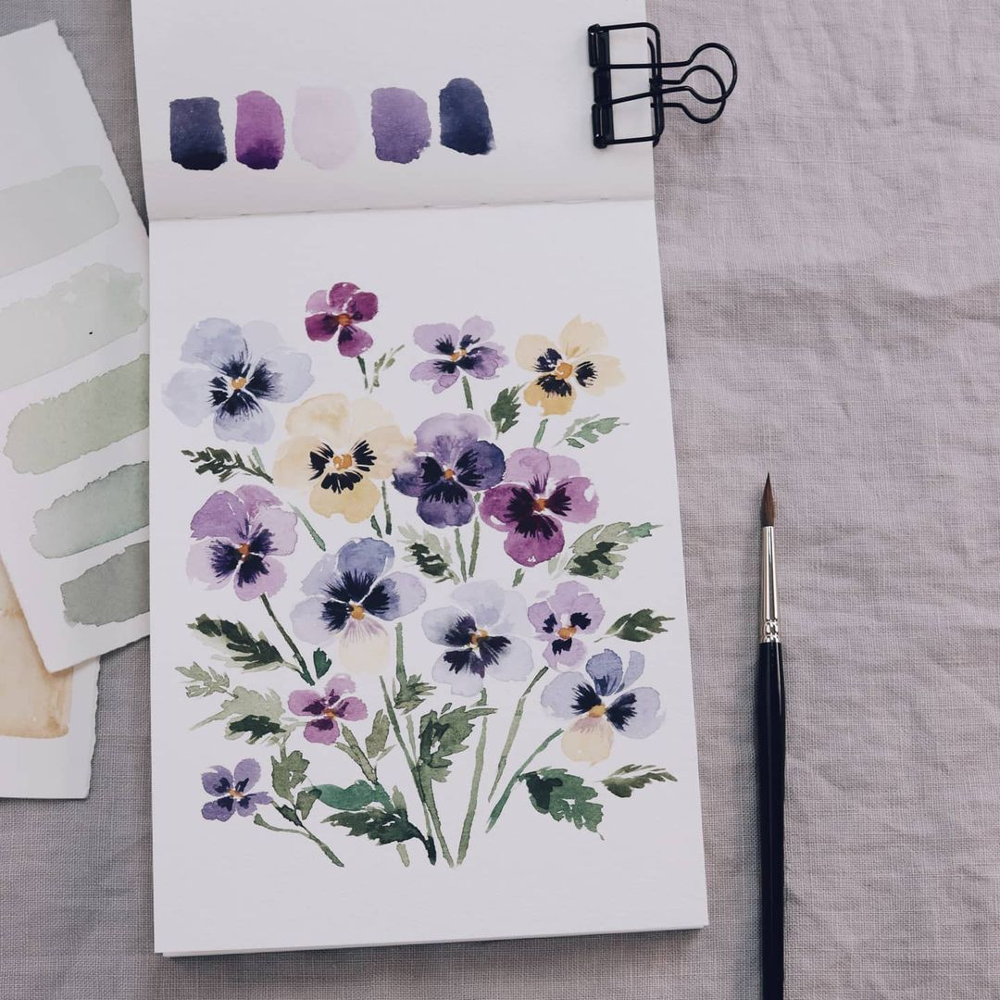
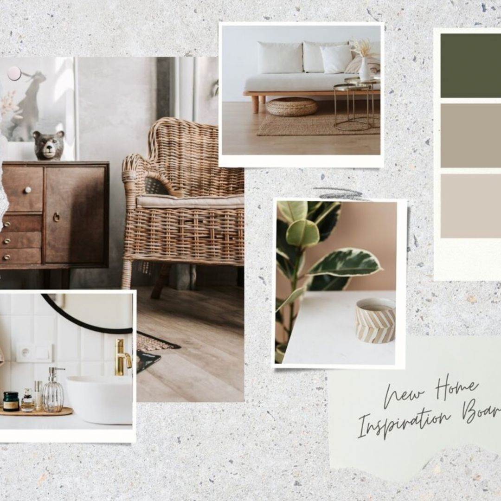
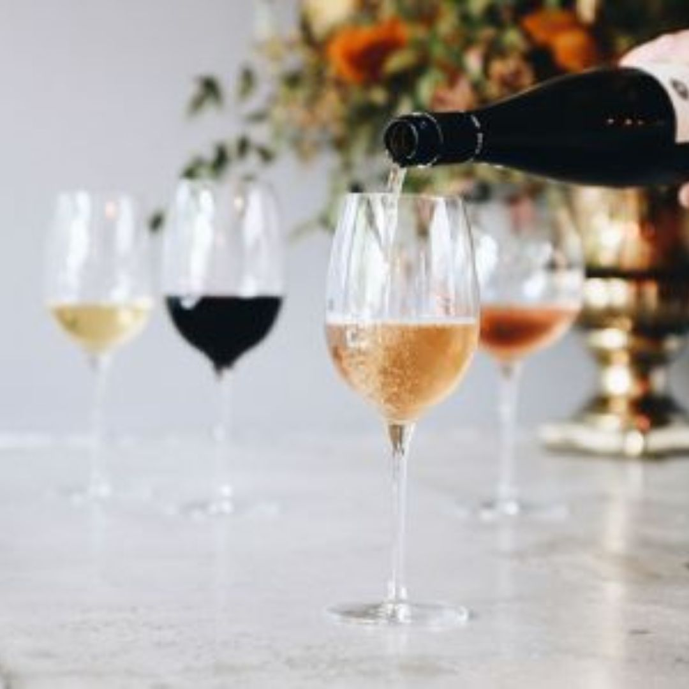

email: karolina.lauferova@gmail.com
telefon: 777 123 456
linkedin
web: www.koakoa.cz
| 2007 - 2010 | Navazující magisterské studium (Ing.) Ekonomická analýza, Národohospodářská fakulta Vysoká škola ekonomická |
| 2004 - 2007 | Bakalářské studium (Bc.) Ekonomie, Národohospodářská fakulta Vysoká škola ekonomická |
| 1996 - 2004 | Maturitní zkouška Všeobecné osmileté gymnázium Gymnázium Jana Keplera, Parléřova 2, Praha 6 |
| od 2017 | KOA KOA merino & more Vlastní značka vlněného oblečení pro děti a miminka |
| 2010 - 2013 | Hewlett Packard Specialista odměňování a benefitů pro Velkou Británii a Irsko |
| 2010 | Ekospol Ekonomický analytik v developerské společnosti |
| 2008 - 2009 | Ernst & Young Asistent daňového poradce |
| angličtina | plynně slovem i písmem |
| francouzština | pasivně |
| španělština | pasivně |
Když mám volnou chvilku, hned vytahuju štětce a skicák a maluju akvarely. Už dlouho mě moc baví design interiérů. Absolvovala jsem několik kurzů vinné degustace a ráda si vychutnám skleničku dobrého Ryzlinku nebo Pinot Noir.
  